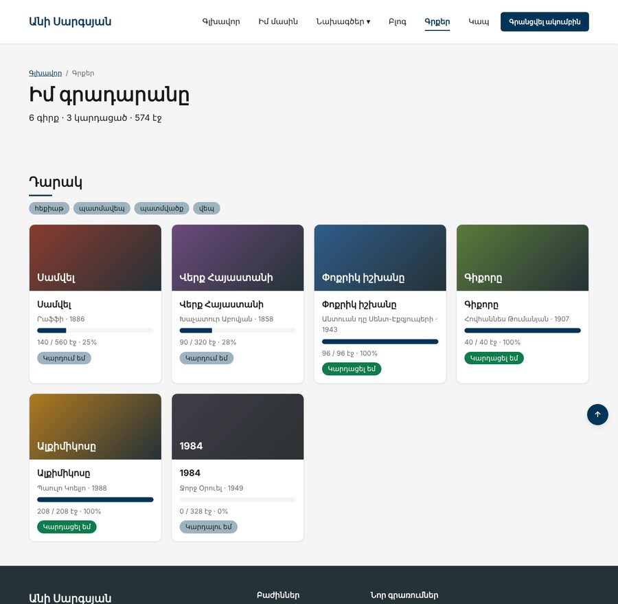
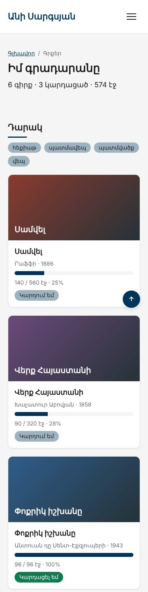

Տնային աշխատանք · JS Դաս 10 · մինի-նախագիծ
Ստատիկ քարտերը ջնջում ենք․ HTML-ում մնում է դատարկ #books, իսկ քարտերը JS-ը ստեղծում է զանգվածից։ Առաջընթացի գիծը, կարգավիճակի դասը և վիճակագրությունը հաշվվում են տվյալներից։
Դաս 01–10․ innerHTML, map().join(""), classList, dataset, ոճեր, createElement, append, before։ Իրադարձությունները՝ Դաս 11-ում։


Աշխատիր քո կայքում (կամ նախորդ դասի օրինակում)։ CSS-ը տրված է, որ կենտրոնանաս JS-ի վրա․ HTML/CSS-ը արդեն գիտես։
starter/css/books-10.css — CSS-ը, որ ավելանում է այս դասինstarter/js/books.js — գրքերի զանգվածըstarter/pages/books.html — «Գրքեր» էջի markup-ը (JS չկա, միայն <script>-ները)id, վերնագիր, հեղինակ, տարի, էջեր, կարդացած, ժանր, շապիկի գույն (starter/js/books.js)getStatus(book)՝ "planned", "reading", "done", իսկ տեքստերը՝ օբյեկտումis-${status} դաս և data-idstyle="--progress: 25%" (HTML Դաս 19-ի .progress)<article class="book is-${status}" data-id="${id}">
<div class="book__cover" style="--cover: ${color}"><span>${title}</span></div>
...
<div class="progress"><span class="progress__bar" style="--progress: ${percent}%"></span></div>render(list)՝ list.map(createBookCard).join("")updateStats(list)՝ գրքեր, կարդացածներ, էջերincludes-ով (Set-ը՝ Դաս 23-ում)createElement("ul"), textContent, append, container.before(list)sortrender(books.filter(...))՝ ֆիլտրեր առանց կոճակների#booksrender(books.filter(b => b.pages > 1000))-ը ցույց է տալիս դատարկ վիճակը| Սխալ | Ինչպես ուղղել |
|---|---|
| Քարտերի միջև երևում է «,» | Մոռացել ես .join("") |
| Գիծը միշտ լցված է | CSS փոփոխականի անունը՝ --progress, արժեքը՝ տոկոսով |
| Շապիկը սպիտակ է | --cover-ը չի փոխանցվել կամ գույնը չակերտների մեջ է |
| Ժանրերը կրկնվում են | Ավելացնելուց առաջ ստուգիր includes-ով |
Սրանք Դաս 10-ի տնային աշխատանքի կետերն են։ «մինի-նախագծում» նշվածները արդեն կատարել ես վերևի քայլերում, մնացածը կատարիր առանձին ֆայլերում։
h1-ով և JS-ով փոխիր դրա տեքստը։ Ապա փորձիր նույնը innerHTML-ով՝ <em> թեգով ներսում։.box դիվ։ JS-ով ավելացրու .active դասը, հետո հանիր, հետո toggle արա երկու անգամ։ Ամեն քայլից հետո տպիր className-ը։.hidden { display: none; }։ JS-ով թաքցրու և ցույց տուր որևէ բլոկ՝ միայն classList-ով։style.width-ով ըստ տոկոսի փոփոխականի։<img> և JS-ով սահմանիր src և alt։ Ապա setAttribute-ով ավելացրու title։data-id և data-name։ JS-ով կարդա դրանք dataset-ով և տպիր։map + join + innerHTML-ով գեներացրու <ul> ցուցակ։ մինի-նախագծումcreateElement և append-ով։ Համեմատիր՝ որ ձևն է քեզ ավելի հարմար և գրիր մեկնաբանության մեջ։ մինի-նախագծումproducts զանգվածը։ Render արա միայն 100 000-ից էժան ապրանքները, դասավորած գնով։ մինի-նախագծումrenderEmpty() դեպքի մշակում․ եթե ֆիլտրից հետո ապրանք չմնա, ցույց տուր «Ապրանք չգտնվեց» հաղորդագրություն։ Ստուգիր՝ ֆիլտրելով 1 000 000-ից թանկերը։ մինի-նախագծումԵրբ բաժին 03-ի բոլոր կետերը նշված են, բացիր օրինակը և դրա կոդը example/js/-ում։ Գտիր մեկ բան, որ դու արել ես այլ կերպ, և մտածիր՝ որն է ավելի հասկանալի և ինչու։ Քո լուծումը կարող է տարբերվել և լինել ճիշտ։